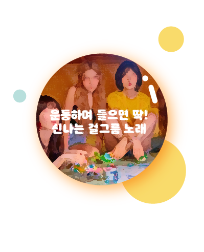
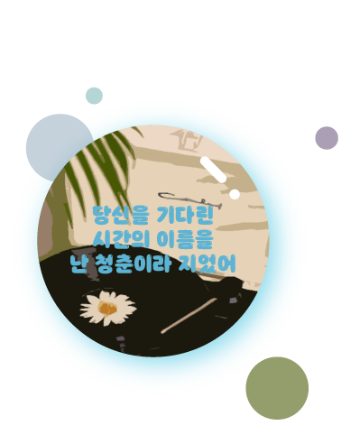
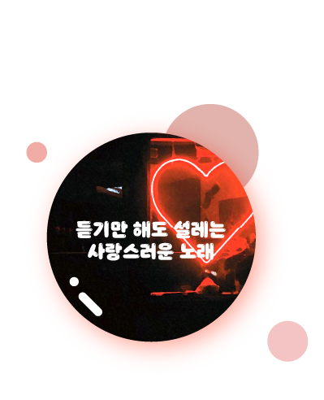

My Bubble
My page
Community
Log Out



" . "
노래 제목
가수
발매일
장르
성별
솔로/그룹
들은 시각 (최신순)
" . "
"; while ($row = mysqli_fetch_array($result)) { echo "
" . $row['Title'] . "
" . '
' . $row['Artist'] . '
' . '
' . $row['Release_date'] . '
' . '
' . $row['Genre'] . '
' . '
' . $row['Gender'] . '
' . '
' . $row['Group'] . '
'. '
' . $row['DATE'] . '
'; } //불러온 데이터들을 출력 echo ''; mysqli_close($conn); ?>
노래 검색창으로 돌아가기